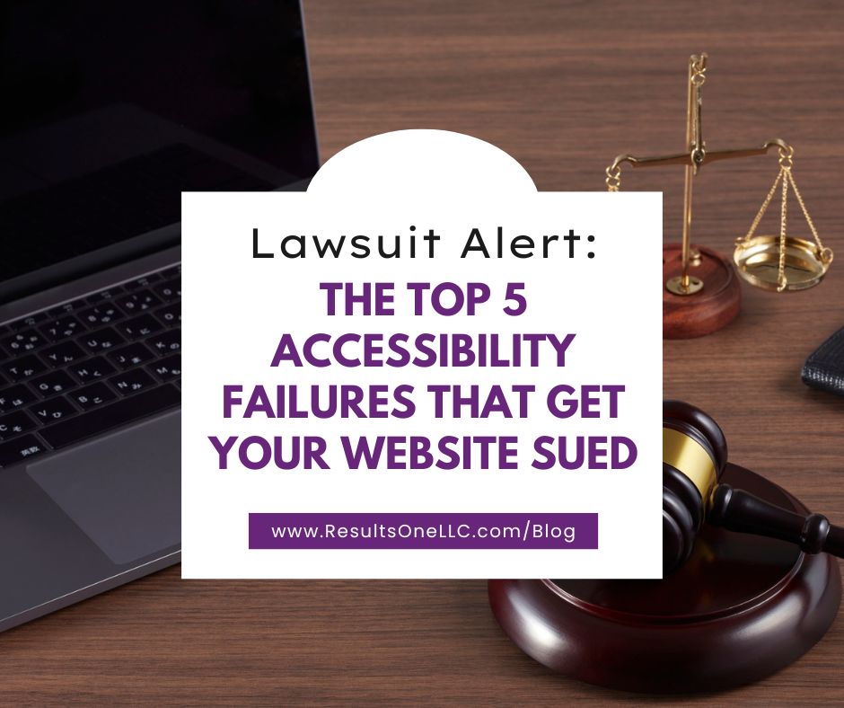

Lawsuit Alert: The Top 5 Accessibility Failures That Get Your Website Sued

In the digital era, your website is considered a place of public accommodation. If a person with a disability cannot access your site, complete a purchase, or use a key service, it creates a potential legal liability under accessibility laws like the Americans with Disabilities Act (ADA) in the U.S.
The majority of digital accessibility lawsuits stem from a few core, preventable technical failures. By fixing these five issues, you drastically reduce your legal risk and immediately make your site usable for millions more people.
1. Missing or Improper Alternative Text (Alt Text)
The most frequent and easiest-to-detect violation.
- The Barrier: Images on your site—from product photos and charts to important icons—lack a text description in their code (Alt Text).
- The Impact: A person who is blind and uses a screen reader cannot access the visual information. The screen reader simply skips the image or reads a useless file name like “IMG_4920.jpg”. This is particularly damaging on e-commerce sites where the image is the product.
- The Fix (WCAG 1.1.1): Every informative image must have concise, descriptive Alt Text. Decorative images (like spacers or non-functional design elements) must have null Alt Text (alt=“”) so the screen reader knows to skip them.
2. Poor Keyboard Navigation
A foundational requirement for digital access.
- The Barrier: Many interactive elements—links, buttons, drop-down menus, and forms—can only be successfully activated using a mouse pointer.
- The Impact: Users with severe motor disabilities, or those who are blind (relying on the Tab key to move sequentially), cannot navigate the site. They get “stuck” or are unable to complete a critical action like adding an item to a cart or submitting a form. This often results in a keyboard trap, where a user tabs into a component but cannot tab out.
- The Fix (WCAG 2.1.1): Ensure that every interactive element on the page can receive focus (using the Tab key) and that all functionality can be completed using the keyboard alone. The visual focus indicator (the visible outline around a focused element) must also be clearly visible.
3. Insufficient Color Contrast
An easily testable design flaw with major readability consequences.
- The Barrier: The color of the text is too similar to the color of its background (e.g., light gray text on a white background).
- The Impact: Users with low vision, color blindness, or age-related visual changes may find the text impossible to distinguish and read. This is a common failure point that is easily picked up by automated testing tools, making it a low-effort target for legal demand letters.
- The Fix (WCAG 1.4.3): Text and images of text must have a minimum contrast ratio of 4.5:1 against the background. You must use an online contrast checker tool to verify all color combinations in your design.
4. Inaccessible Forms and Missing Labels
The most common failure point for critical conversion elements.
- The Barrier: Input fields in forms (contact forms, checkout forms, login fields) are not properly associated with a visible <label> element in the code.
- The Impact: Screen readers announce the presence of a blank input field but cannot tell the user what data is required (e.g., “Enter your first name,” “Email address”). The user is left unable to complete the transaction, application, or request for information.
- The Fix (WCAG 3.3.2): Ensure every input field is correctly associated with a programmatic label. When errors occur, the error messages must be clearly presented and correctly associated with the field so the screen reader user knows exactly what needs to be fixed.
5. Lack of Captions or Transcripts for Multimedia
Exclusion from audio or video content.
- The Barrier: Videos, live streams, and audio podcasts are posted without corresponding text alternatives.
- The Impact: Users who are deaf or hard of hearing are entirely excluded from the information, dialogue, or critical sound effects presented in the content. This is a common point of contention in lawsuits against businesses that rely heavily on video content, such as educational platforms or media companies.
- The Fix (WCAG 1.2.1 & 1.2.2): All pre-recorded video and audio content that contains dialogue or essential sound must include accurate closed captions and, ideally, a full transcript.
The Next Step: Audit Your Risk
The vast majority of digital accessibility lawsuits target these five failure points because they are easy to find, and they block a user from completing a core task on the website.
Don’t wait for a demand letter. A small investment in an accessibility audit today is significantly cheaper than settling a lawsuit tomorrow.
Next Steps for You
Curious how your website measures up? Schedule a free consultation to discuss an accessibility audit.